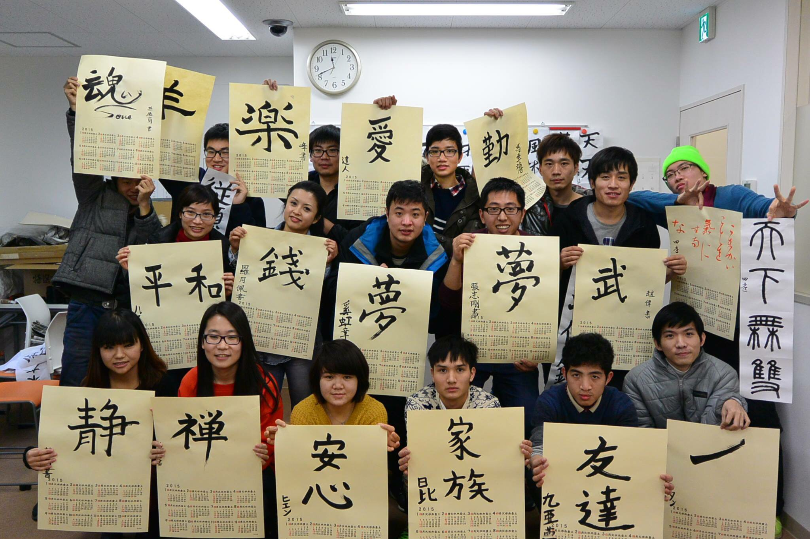
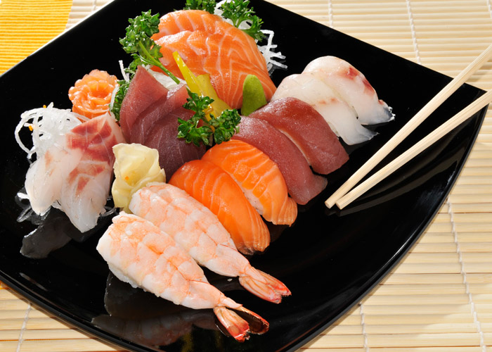
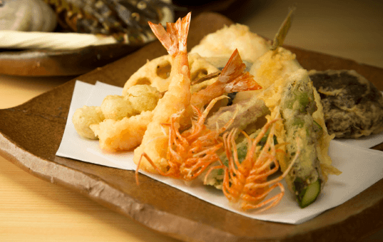
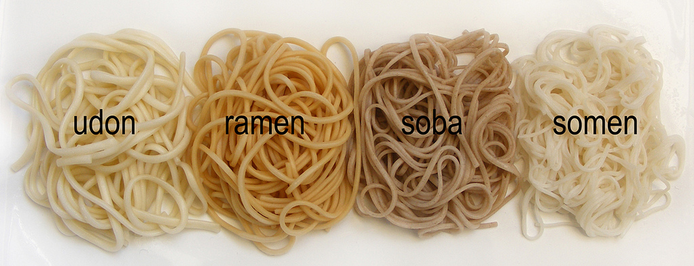
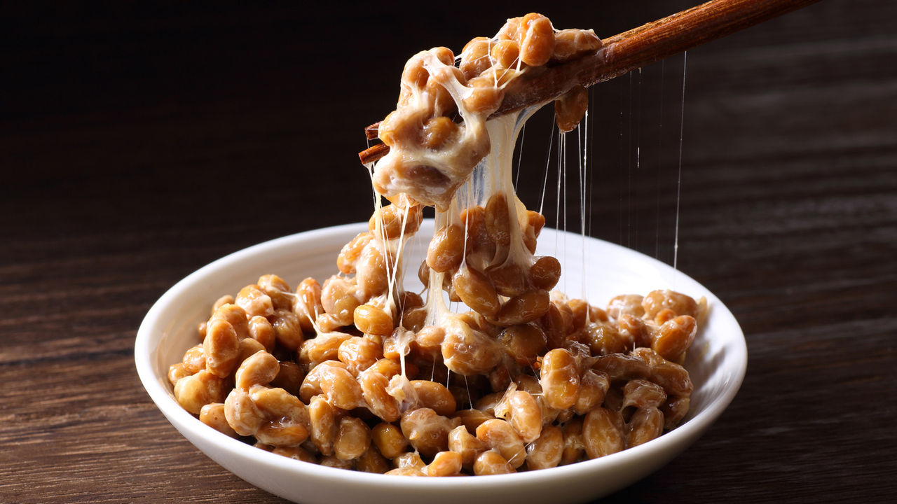

.jpg)
.jpg)
.jpg)
留学生の声
全国の留学生のアンケートを実施しました。
日本へ留学する4大メリットを紹介する記事を掲載した。
- 教育の質が良い
- 費用が安い
- 条件が少ない
- 就職に有利
日本は教育を非常に重視する国である。国公立であろうと私立であろうと、アジアで一流の大学がそろっている。英国の教育雑誌が公表した2014年の世界大学ランキングで、日本は5つの大学がベスト200にランクインしている。日本では、大学時代は専門知識を学ぶのに適した時期だと考えられており、この時期に仕事に必要な知識や技能を学ぶ。
欧米への留学と比べて、日本への留学は安い。子どもを日本へ留学させる場合、15万元（約285万円）の保証金を3カ月間銀行に預けさえすればよい。学費や生活費は6〜7万元で十分で、後は本人がアルバイトで稼げばいい。日本人の原則の中に「人に迷惑をかけない」という非常に重要な一項がある。そのため、日本人は子どもが小さいときから独立することを教え、家庭の経済状況にかかわらずほとんどの大学生がアルバイトをする。留学生がアルバイトをするのは経済的な負担を減らすだけでなく、自己を鍛えることにもつながる。
海外留学と言うと非常に大ごとのようで、要求が高いように感じる。しかし実際は、高校生や専門学校生は12年間の教育を受け、高校の卒業証書に相当するものを有すると同時に180コマの学習証明があれば、日本留学に申し込む資格がある。日本留学は比較的容易だと言える。
日本は現在、高度な少子高齢社会で、多くの若者が結婚せず、人口が減少傾向にある。そのため、多くの企業が優れた若い人材を求めており、留学生はその中でも注目されている供給源である。中国人学生は日本で数年間学んで、十分な日本語能力を身に付け、日本の教育を受けてさえいれば、日本での職探しは順調に進むはずだ。現在、中国国内での就職はさまざまなプレッシャーがかかる。日本留学から海外就職の夢を実現させるのも良い選択である。
和食
「美味しい食べ物ばかりだ！」日本に来たら絶対に食べるべきだよね。
これから、いくつかの料理を紹介させて頂きます。
- 日本食の代表格: "寿司" ー 刺身
- 
- 天ぷら
- 
- 面類
- 
- 納豆
- 
酢飯の上に具材をのせて握ったにぎり寿司の他に、ちらし寿司や巻き寿司など色々な種類があります。昔は祝いの席などのおめでたい時に食べる高級な食べ物でしたが、今、日常的に寿司を食べる事ができるようになりました。近年、寿司は日本の代表的な料理として全世界に知られています。
魚介類や野菜等の食材を、鶏卵と溶き汁を小麦粉にあわせたものを衣とし、油で揚げて、代表的な日本料理である。
そば、うどん、そうめん、ラーメン、焼きそば、沖縄そば・・・etc. 日常的に頂く麺類から、郷土料理、ご当地グルメの目新しい、珍しい麺料理まで。多彩で美味なる日本の麺料理の数々。
日本人の健康食として昔から納豆が食べられてきました。納豆にはカルシウムやビタミンなど体に必要な栄養素がバランスよく豊富に含まれていることは有名ですし、なによりご飯によく合い、非常に重宝される食材だからです.
旅・遠足
せっかく来日したから日本国内の死ぬまでに一度は行きたい観光名所

季節ごと、時間ごとに異なる風景。それぞれの季節、それぞれの時間帯を感じる場所やキーワード。日本には素敵な場所が沢山ある。見慣れた景色も、素晴らしい風景になる瞬間がある。一生の中の一シーン。一生の中の一風景。美しい日本をあなたへ。